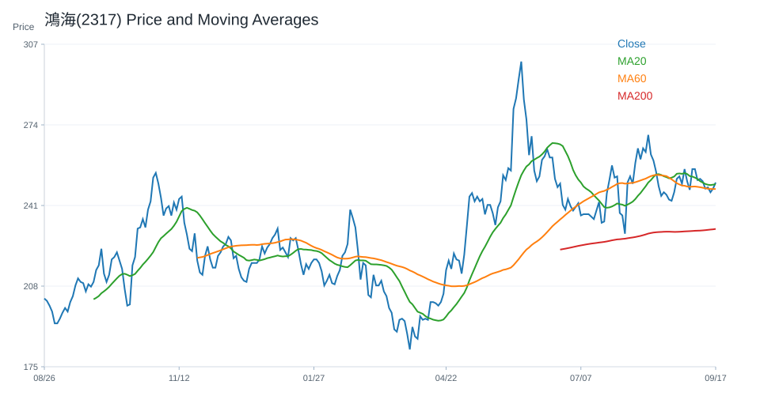
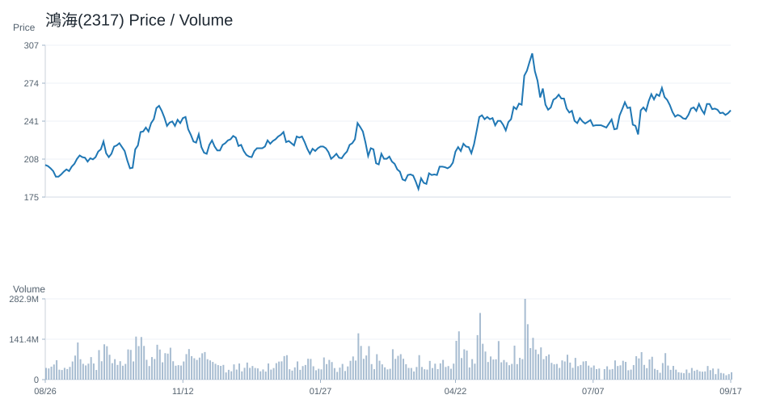
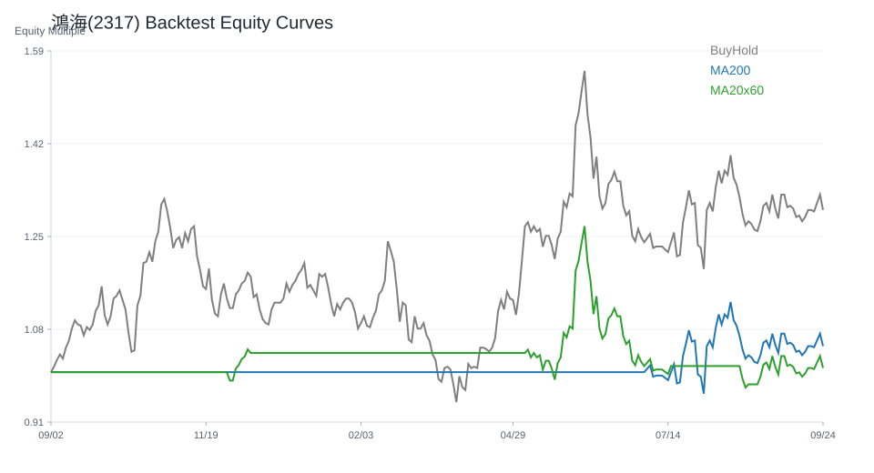

20 日
-17.92%60 日
19.35%觀察等級
降低關注市場資料
2026-07-03- 成交量49,052,306.00
- 20 日均線260.27
- 60 日均線247.51
- 200 日均線230.89
- 距 52 週高點-22.17%
- 距 52 週低點54.66%
技術指標
Python 計算- RSI1438.25
- MACD hist-3.82
- KD K/D10.30 / 13.62
- ADX20.67
- 布林上緣284.01
- 布林下緣236.54
量價與事件
規則式分析- 量價型態量能中性
- 量價分數-2
- 20 日量比0.74
- OBV 20 日變化-31.50%
- 事件偏向事件中性
- 事件分數1
研究訊號與觀察等級
不是買賣建議降低關注；研究訊號 偏空，分數 -4。
部分條件偏弱，研究關注度應低於正向標的。
- 20 日跌幅偏弱
- 60 日趨勢偏強
- 跌破 20 日均線
- 站上 200 日均線
- MACD histogram 為負
- KD 偏弱
- 量價型態：量能中性
- 量價未出現明確偏多或偏空結構
回測摘要
歷史資料研究| 策略 | CAGR | Sharpe | 最大回撤 | 勝率 | 交易次數 |
|---|---|---|---|---|---|
| 價格高於 200 日均線 | 19.42% | 0.80 | -27.81% | 50.88% | 12 |
| 20/60 日均線交叉 | 27.34% | 1.10 | -27.81% | 53.30% | 7 |
| 買進持有 | 28.35% | 0.92 | -50.33% | 51.97% | 1 |
圖表
價格 / 量價 / 回測鴻海(2317)

鴻海(2317)

鴻海(2317)
